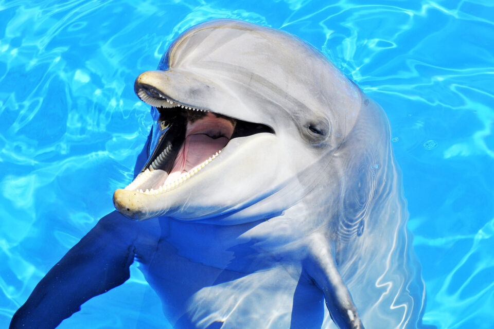

His work launched the global interest in dolphins and whales, provided the basis for the movie Day of the Dolphin, and stimulated the enactment of the Marine Mammal Protection Act. Lilly's interest in the nature of human consciousness led him to invent the isolation tank in the 1950s. In the early sixties, Lilly encountered LSD and soon took his experiments with this mindchanger to the isolation tank. The hairraising experiences that resulted formed the essence of the movie Altered States. Lilly's life and work at the forefronts of human knowledge encompass the major themes of the twentieth century. His dozen books have sold millions of copies worldwide. A distinguished brain researcher even before he became a public figure, Lilly has sown the seeds of several scientific revolutions, including the theory of internal realities, the hardware/software model of the human brain/ mind, and the initiation of worldwide efforts at interspecies communications with large-brained dolphins.
His work launched the global interest in dolphins and whales, provided the basis for the movie Day of the Dolphin, and stimulated the enactment of the Marine Mammal Protection Act. Lilly's interest in the nature of human consciousness led him to invent the isolation tank in the 1950s. In the early sixties, Lilly encountered LSD and soon took his experiments with this mindchanger to the isolation tank. The hairraising experiences that resulted formed the essence of the movie Altered States. Lilly's life and work at the forefronts of human knowledge encompass the major themes of the twentieth century. His dozen books have sold millions of copies worldwide. A distinguished brain researcher even before he became a public figure, Lilly has sown the seeds of several scientific revolutions, including the theory of internal realities, the hardware/software model of the human brain/ mind, and the initiation of worldwide efforts at interspecies communications with large-brained dolphins.
His work launched the global interest in dolphins and whales, provided the basis for the movie of the Dolphin, and stimulated the enactment of the Marine Mammal Protection Act. Lilly's interest in the nature of human consciousness led him to invent the isolation tank in the 1950s. In the early sixties, Lilly encountered LSD and soon took his experiments with this mindchanger to the isolation tank. The hairraising experiences that resulted formed the essence of the movie Altered States. Lilly's life and work at the forefronts of human knowledge encompass the major themes of the twentieth century. His dozen books have sold millions of copies worldwide. A distinguished brain researcher even before he became a public figure, Lilly has sown the seeds of several scientific revolutions, including the theory of internal realities, the hardware/software model of the human brain/ mind, and the initiation of worldwide efforts at interspecies communications with large-brained dolphins.
His work launched the global interest in dolphins and whales, provided the basis for the movie Day of the Dolphin, and stimulated the enactment of the Marine Mammal Protection Act. Lilly's interest in the nature of human consciousness led him to invent the isolation tank in the 1950s. In the early sixties, Lilly encountered LSD and soon took his experiments with this mindchanger to the isolation tank. The hairraising experiences that resulted formed the essence of the movie Altered States. Lilly's life and work at the forefronts of human knowledge encompass the major themes of the twentieth century. His dozen books have sold millions of copies worldwide. A distinguished brain researcher even before he became a public figure, Lilly has sown the seeds of several scientific revolutions, including the theory of internal realities, the hardware/software model of the human brain/ mind, and the initiation of worldwide efforts at interspecies communications with large-brained dolphins.
What's up everyone!
